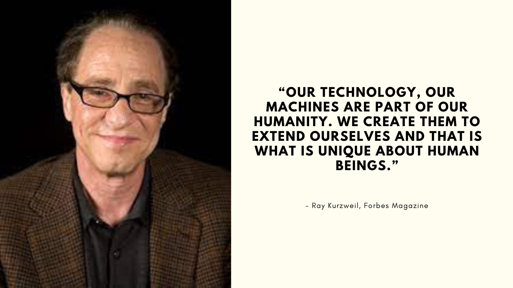

Congratulations on embarking on your AI journey!
Before we dive into the exciting world of artificial intelligence, let's take a moment for a pre-test.
Please approach this pre-test with integrity, as it is designed solely for assessment purposes. Remember, the results won't impact your final grade or academic standing. Instead, they'll help us tailor our approach to best support your learning journey.
Thank you for your cooperation, and let's get started on this exciting adventure into AI!
COURSE OVERVIEW
Do you know that artificial intelligence is everywhere around—on your smartphone, in automobiles, hospitals, and many other aspects of your life? Artificial intelligence records and analyzes things you do every day, and humans make decisions based on those things.
• Recommends merchandise you might like to buy on the internet
• Alerts you if your smartwatch or fitness band detects low oxygen in your bloodstream, inflammation, or an unhealthy spike in blood sugar
• Scans your social media posts to learn more about what you are thinking
• Helps banks invest money in your family’s bank accounts to keep the economy around you growing
Welcome to the Introduction to Artificial Intelligence course! In this course, you’ll become familiar with fundamental artificial intelligence (AI) concepts, such as types of AI, methods that AI uses to find connections and make predictions, and ways that humans can interact with AI systems.
Learning Objectives
After completing this course, you should be able to:
• Define artificial intelligence
• Differentiate between AI and augmented intelligence
• Describe three levels of artificial intelligence
• Describe the history of AI, from the past to the possible future
• Define and describe machine learning
• Differentiate between structured, unstructured, and semi-structured data
• Describe how machine learning structures unstructured data
• Describe how machine learning uses probabilistic calculation to solve problems
• Describe three methods by which machine learning analyzes data
• Describe an ideal relationship between humans and machine learning
Estimated Duration
1 hour, 20 minutes
Completion criteria
To get credit for completing this course, you need to finish all 6 modules by visiting each lessons within its page, remember to complete all the interactive activities and quizzes, and pass the final assessment.
You must pass the quiz at the end of each module to continue to the next module.
There is a final, graded assessment at the end of the course. You must achieve 75 percent to pass. Don’t worry! If you aren’t successful at first, AILearn will help you until you pass.
As you progress through the course, you’ll see completion check marks beside the module and lesson names in the side navigation.
Course design
AILearn is designed so you can learn at your own pace and easily navigate using the organized module structure. You’ll find:
1. Personalized learning objects based on your learning style to help you learn more effectively:
• Visual Learners are presented with learning materials in various presentations like Diagrams and charts, Mind Maps, Color-coded Notes, Infographics, Videos and Animations, Images and Photographs, and Flashcards with Visuals.
• Auditory Learners are presented with learning materials in various presentation like Audio Recordings, Podcasts and Audiobooks, and Rhymes and Mnemonics.
• Reading/Writing Learners are presented with Text-Based Learning materials.
2. Interactions to reinforce what you learn.
3. Quizzes to check your knowledge
4. Helpful resources so you can explore more.
5. A final assessment
Introduction
In this module, you will learn about what artificial intelligence (AI) is, what it does, and the three levels of predictions that AI can make:
• Norrow
• Broad
• General
Learning Objectives
After completing this module, you should be able to:
• Define artificial intelligence
• Differentiate between AI and augmented intelligence
• Describe three levels of artificial intelligence
What is AI?
AI plays an often invisible role in everyday life, powering search engines, product recommendations, and speech recognition systems.
Artificial intelligence (AI) refers to the ability of a machine to learn patterns and make predictions. AI does not replace human decisions; instead, AI adds value to human judgment. In its simplest form, artificial intelligence is a field that combines computer science and robust datasets to enable problem-solving.
You might be surprised by the way AI is described today. (Spoiler! It doesn’t involve thinking, deciding, or taking over the world.) Read on to discover what AI really does. When you have that in mind, you’ll be ready to dive into the things AI can accomplish—and what it can help humans accomplish.
What is the difference between AI and augmented intelligence?
When learning about artificial intelligence, you’ll come across the term augmented intelligence. Both terms share the same objective, but have different approaches. Augmented Intelligence has a modest goal of helping humans with tasks that are not practical to do. For example, “reading” 1000 pages in an hour. In contrast, Artificial Intelligence has a lofty goal of mimicking human thinking and processes. However, it’s important to note that AI today is not mature enough to perform independent tasks such as diagnosing cancer.
ARTIFICIAL INTELLIGENCE VS. AUGMENTED INTELLIGENCE
Suppose that I got to work today.
I submit to you that my drive from my home to my office used 3 forms of intelligence. The first intelligence was human intelligence. The intelligence there was the intelligence that I needed to operate the vehicle, to turn the steering wheel, to check my mirrors.
The second form of intelligence was artificial intelligence. Once I got on the highway, I turned on the self-driving feature in my car. Fancy. Now the car stayed in its own lane, kept an appropriate distance from the vehicle in front, and maintained a proper speed. No input from me at all.
When I got off of the highway, I used a third form of intelligence: augmented intelligence. Augmented intelligence, well, that took the form of all the driver-assist features in the vehicle, things like collision detection, to alert me if I got too close to the car in front, and blind spot avoidance to tell me if there was a vehicle alongside me as I changed lanes.
Artificial intelligence? Well, that is the ability for machines to perform tasks that normally require human intelligence, such as reasoning, natural communication and problem solving. It basically replaces the need for a human. So, computers doing the work as humans not really needed. And the artificial intelligence performs certain tasks and makes decisions, and it's incorporated into so many systems today.
Now contrast that with augmented intelligence. Now this is where you have machines. And you have humans both working together. And they're doing so to enhance each other's efforts when completing tasks.
Augmented intelligence systems augment human abilities, things like screen readers for the blind, voice-driven navigation, or my in-car collision avoidance system. They're all examples of augmented intelligence at work. They act on our behalf in the physical world, but in a way that complements our own capabilities.
So, artificial or augmented? Which form of intelligence will give us the best results for a given problem? Well, to answer that, let's create a strength matrix. So, machines vs. humans.
Now, one thing machines are great at is ingesting large amounts of data. They can take in more data at a faster rate than any human could, and they also don't get tired so they can just keep going and going, ingesting that data as they go. Machines are especially good at things like repetitive tasks. And to do so in a way that is reliably accurate. Unlike my spelling of "repetitive". So, if you need to quickly analyze a lot of data or do something over and over again with no margin for error and then specifically artificial intelligence is really your best bet.
Now, on the other hand, us humans, well, we have a few advantages, too. We're very good at generalizing information. We can take a single piece of data and understand the concept that it represents.
We're also very good at creativity. We can come up with ideas, we can solve problems, and communicate our findings in a way that, well, machines just can't.
And we have emotional intelligence, too. And that's a big benefit where we can understand the reactions of others, and it's critical for tasks like customer service or caregiving.
Now augmented intelligence is really a sweet spot that combines all of these human strengths with a bit of a helping hand from our machine counterparts. By using AI to help us see and understand the world in new ways, we are able to do things that would be impossible for us humans on our own.
So, which form of intelligence is best?
The answer is both. And that's why I love augmented intelligence. It's how humans will continue to thrive and lead in the world and get me to work safely.
So, what continues to drive the development of AI?
As computing power and algorithms become more powerful and data volumes increase, companies will adopt new use cases for AI technologies. Companies will embed smart systems into their applications to drive innovation and efficiencies, enhance employee experience, automate tasks, decrease costs, and improve revenue.
Next, we’ll explore what AI does and the different predictions that AI can make.
What does AI do?
Artificial intelligence machines (researchers call them “AI services”) don’t think. They calculate. They represent some of the newest, most sophisticated calculating machines in human history. Some can perform what’s called machine learning as they acquire new data. Others, using calculations arranged in ways inspired by neurons in the human brain, can even perform deep learning with multiple levels of calculations.
Imagine you are given the job to sort items in the meat department at a grocery store. You realize that there are dozens of products and very little time to sort them manually. How could you use artificial intelligence, machine learning, and deep learning to help with your work?
Artificial Intelligence
To separate the chicken, beef, and pork, you could create a programmed rule in the format of if-else statements. This allows the machine to recognize what is on the label and route it to the correct basket.
A programmed rule might look something like this:
if beef_is_on_label:
route_items_to_center_basket()
else:
redirect_item_to_main_basket()
Artificial intelligence makes this process more efficient.
Machine Learning
To improve the performance of the machine, you expose it to more data to ensure that the machine is trained on numerous characteristics of each type of meat, such as size, shape, and color. The more data you provide for the algorithm, the better the model gets. By providing more data and adjusting parameters, the machine minimizes errors by repetitive guess work.
ML uses feature extranction to sort meat according to its various characteristics
Deep Learning
The grocery store has expanded its selection to include more products such as chicken tenders, ground beef, and wild boar. In addition, the products now come in different sizes, shapes, and seasonings. What makes deep learning different?
Deep learning models eliminate the need for feature extractions. For your work in the meat department, you decide to use algorithms based on deep learning to sort meat by removing the need to define what each product looks like. Feature extraction is built into the process without human input. Once you have provided the deep learning model with dozens of meat pictures, it processes the images through different layers of neural networks. The layers can then learn an implicit representation of the raw data on their own.
How do AI services calculate? And, what do they do with those calculations? Let’s break this down into two parts.
Analysis: AI services can take in (or “ingest”) enormous amounts of data. They can apply mathematical calculations in order to analyze data, sorting and organizing it in ways that would have been considered impossible only a few years ago.
Prediction: AI services can use their data analysis to make predictions. They can, in effect, say, “Based on this information, a certain thing will probably happen.”
This is what AI services do! Based on data analysis, they make predictions. It might not seem like much, but that analysis and those predictions can have an enormous impact on human life.
Before you move on, take a moment to compare “analysis” and “prediction” to the guess you made earlier. Are you surprised? If so, you might be wondering how those two seemingly simple actions can be so important.
What predictions AI can make?
Most people have a love-hate relationship with the autocorrect feature on phones or computers. What’s happening when you enter a misspelled word? And how does the machine know to suggest a better spelling?
Simply put, the software analyzes what you’ve typed so far and predicts a likely correction. Your phone or computer (or its online service) has more than just a dictionary of correct spellings. It has a huge library of phrases that humans use in certain contexts on many subjects. So, when you enter a word that’s not in its dictionary, it begins analyzing and predicting and suggests the word you need. Predictions aren’t always accurate. But if they’re correct often enough, they’re useful and can save you time.
Here are more ways that AI uses data to make predictions.
Human Language
Online chatbots use natural language processing (NLP) to analyze poorly typed or spoken questions, then predict which answers to give on topics ranging from shipping or business hours to merchandise and sizes.
Voice Recognition
AI helps doctors identify serious diseases based on unusual symptoms and early-warning signs, and it reads speed limit and stop signs as it guides cars through traffic.
Fraud Detection
AI analyzes patterns created when thousands of bank customers make credit card purchases, then predicts which charges might be the result of identity theft.
Today’s AI has gone beyond creating driving directions, vacuuming floors, or recommending new fashions. Now it really can mimic the capabilities of the human mind. AI can learn from examples and experience, recognize objects, understand and respond to language, and solve problems. Even more exciting are its future possibilities. Read on to see how AI might evolve over the next half-century.
How AI is evolving?
Computer scientists have identified three levels of AI based on predicted growth in its ability to analyze data and make predictions. They call these levels:
• Norrow (2010-2015)
• Broad (today)
• General (2050 and beyond)
Norrow AI
• Narrow AI is focused on addressing a single task such as predicting your next purchase or planning your day.
• Narrow AI is scaling very quickly in the consumer world, in which there are a lot of common tasks and data to train AI systems. For example, you can buy a book with a voice-based device.
• Narrow AI also enables robust applications, such as using Siri on an iPhone, the Amazon recommendation engine, autonomous vehicles, and more. Narrow AI systems like Siri have conversational capabilities, but only if you stick to the script.
Broad AI
• Broad AI is a midpoint between Narrow and General AI.
• Rather than being limited to a single task, Broad AI systems are more versatile and can handle a wider range of related tasks.
• Broad AI is focused on integrating AI within a specific business process where companies need business- and enterprise-specific knowledge and data to train this type of system.
• Newer Broad AI systems predict global weather, trace pandemics, and help businesses predict future trends.
General AI
• General AI refers to machines that can perform any intellectual task that a human can.
• Currently, AI does not have the ability to think abstractly, strategize, and use previous experiences to come up with new, creative ideas as humans do, such as inventing a new product or responding to people with appropriate emotions. And don't worry, AI is nowhere near this point.
There might be another level, known as artificial superintelligence (ASI) that could appear near the end of this century. Then machines might become self-aware! Even then, no levels of AI are expected to replace or dominate you. Instead, scientists hope AI will extend humans’ ability to lead richer lives.
